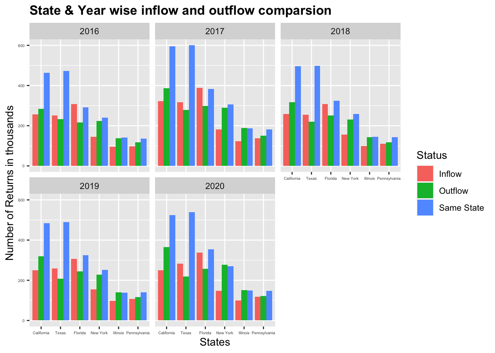
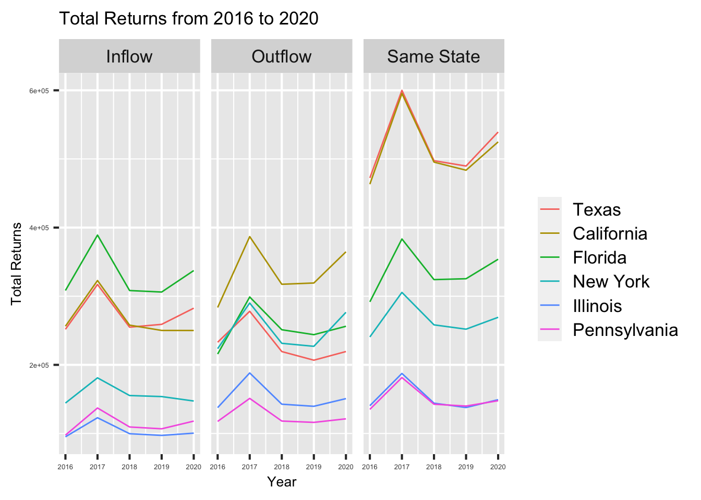
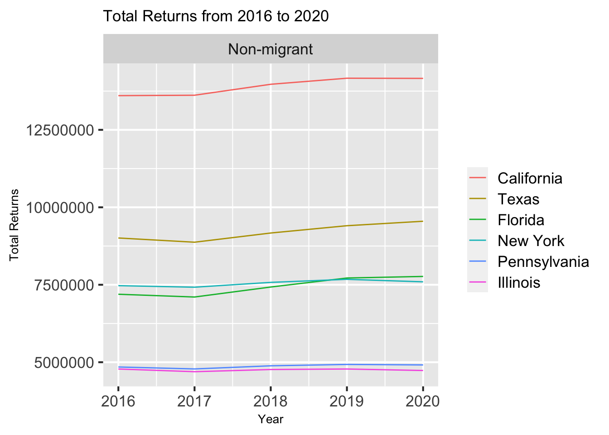
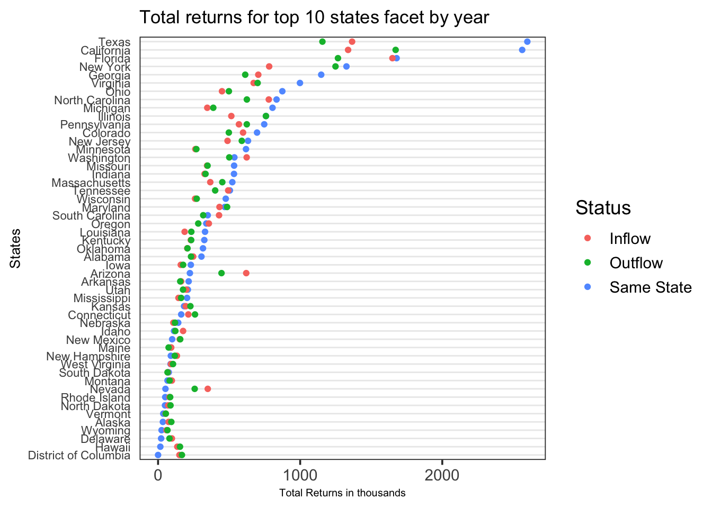
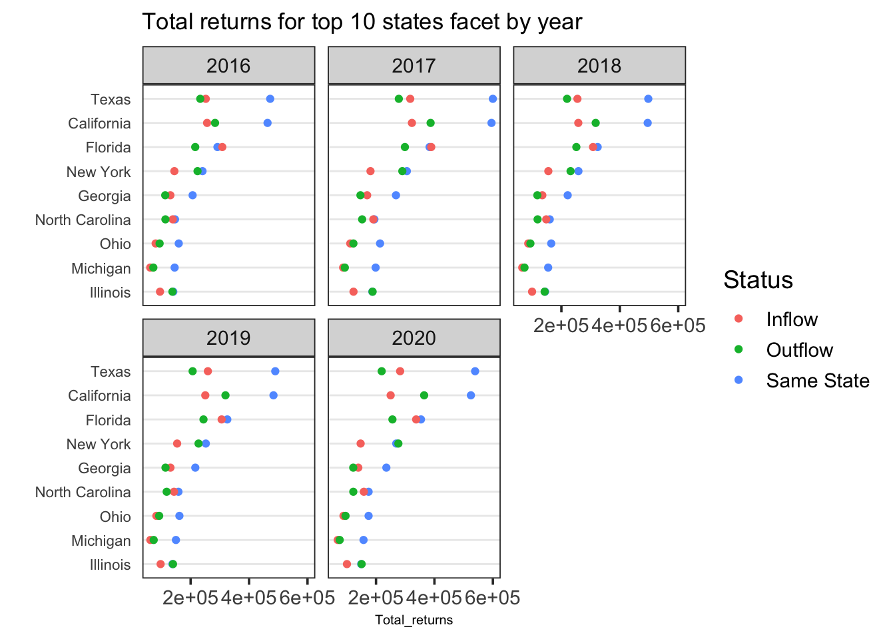

Chapter 4 Results
4.1 Migration of Individuals

Since the data set is quite large, we have considered a subset for the analysis of the Average gross income of the states for the migrants who have migrated out of the state over all the age groups:
For the age group under 26, we can observe that the Average gross income of the migrants has increased in the states of California, New York, and Texas with Texas recording the biggest increase in 2020.

For the age group of individuals between 26 and 35, we can observe that the Average gross income of the migrants has increased in the states of California, New York, and Texas from 2016 to 2017 but there has been a decrease in California and Texas from 2017 onwards. The AGI of New York for this category has increased continuously over the years from 2016 to 2020.

For the age group of individuals between 35 and 45, we can observe that the Average gross income of the migrants has decreased over the years in the states of California with Texas recording similar figures over the years. From the graph, we can see that there has been a sudden increase in the average gross income from 2019 to 2020.

For the age group of individuals between 45 and 55, we can observe that the Average gross income of the migrants has decreased over the years in the states of California with Texas recording similar figures until 2019 and then dropping in 2020. In this category, we can also observe that Illinois is also a significant contributor over other states. From the graph, we can see that there has been an incremental increase in the average gross income from 2018 to 2020

For the age group of individuals between 55 and 65, we can observe that Florida has a relatively high average gross income as compared to other states. New York is another state that has a relatively high average gross income.

For the age group of individuals who are 65 years and above, we can observe that the Average gross income of the migrants has decreased over the years in the states of California with Texas recording similar figures over the years and then dropping in 2020. From the graph, we can see that there has been an incremental increase in the average gross income from 2019 to 2020.
Migration flow within the United States is driven by several competing forces. Although it is all happening in the same country and it varies from State to State, it also affects Age groups and Income levels differently.
During the 2016-2020 period, we observe the majority of individuals staying within their county.
Based on the chart below, the most transient group is composed of individuals making between $1 to $10,000 as they moved out, moved around, and moved into a different state. Our assumptions are that this could be due to having bigger needs to look for better employment opportunities and they might also have the flexibility to move around more if they do not have stable/long term contracts. On the other hand, the most stationary group is individuals making $200,000 or more per year. This can be tied to the fact that they might not need to change their primary residence, are comfortable where they live and if desired, they could have the discretionary income to spend time at their second home (i.e. during COVID-19).

Comparing the type of migration across age groups reveals insights that are more in line with our previous assumptions. Younger people tend to migrate more than older adults. There seems to be a negative relationship between age and moving.

4.2 Number of Tax Returns

The following observations can be made from the above graph which is a facet graph of the number of returns with respect to the age category (The number of returns is the number of households that migrated):
We can observe that among all the groups, the same state migration dominates interstate migration. However, in states like Florida, senior individuals especially the ones above the age of 55 prefer to move to another state than move to a different county in the same state
The majority of the migrants are in the age group of 25 and 35. These individuals might be moving in search of better career and employment opportunities.

The following observations can be made from the above graph which is a facet graph of the number of returns with respect to income of households ( The number of returns is the number of households that migrated):
In most of the income categories, the same-state migration dominates the inflow and outflow migration.
Maximum migration has been observed in the 25000 USD – 50000 USD income category
Least migration has been observed in the 200,000 USD and above income category
In states like Texas and Florida compared to all the other states, the inflow migration is greater than the outflow migration which means that more individuals are entering these states than exiting
4.3 Temporal Analysis | Migration by Year

The following observations can be made from the above graph which is a facet graph of the number of returns with respect to the year
Over the span of 5 years, migration is highest in the states California and Texas compared to all the other states. One possible reason could be the low tax rates in Texas and the vast variety of opportunities( like software development) available in California.
Over the span of 5 years, inflow migration is greater than outflow migration in Texas and Florida and it’s the other way in all the other states (Top 5 states with migration figures)
All 3 types of migration are high in all the top 5 states in 2017 compared to the other years
In all the states, Same state migration dominates inflow and outflow migration

The following observations can be made from the above graph which is a facet graph of the number of returns with respect to the type of migration over the span of 5 years
In all the states, migration peaked in 2017 and then reduced over the next few years and it again increased in 2019. One of the reasons for a possible hike in migration patterns in 2017 could be the introduction of new migration laws in 2017 by the US government.
Over the span of 5 years from 2016 to 2020, Florida has the maximum inflow migration , California has the maximum outflow migration and California and Texas have the maximum same state migration.

The following observations can be made from the above graph which is a time series line that shows the number of non-migrant households over the span of 5 years.
There is a dip in the number of people who did not migrate in the year 2017
This is in accordance with the previous graph that shows an increase in migration in 2017 compared to all other years from 2017 to 2020.

The following observations can be made from the above graph which is a facet graph of the number of tax returns of the migrant population with respect to the type of migration over the span of 5 years.
The figures for states like Texas, California, New York, and Florida are high because their population size is significantly greater than those of other states.
Texas is one of the very few states where the inflow migration is greater than the outflow migration. One of the many reasons could be low tax rates in Texas. Hence a majority of the migrants prefer to settle in Texas as compared to other states.
Of all the states, the outflow migration is maximum in California. One of the many reasons for this trend could be the cost of living. It is far more expensive to live in California as compared to any other state in the United States.

The above graph is a detailed analysis of the previous graph wherein we can see the different types of migration in the top 10 states.The following observations can be made from the above graph:
In the top 10 states, the same state migration dominates the interstate migration.
In states like Ohio and Michigan , the inflow and outflow migration are almost equal in numbers and this trend prevails over the span of 5 years from 2016 to 2020.